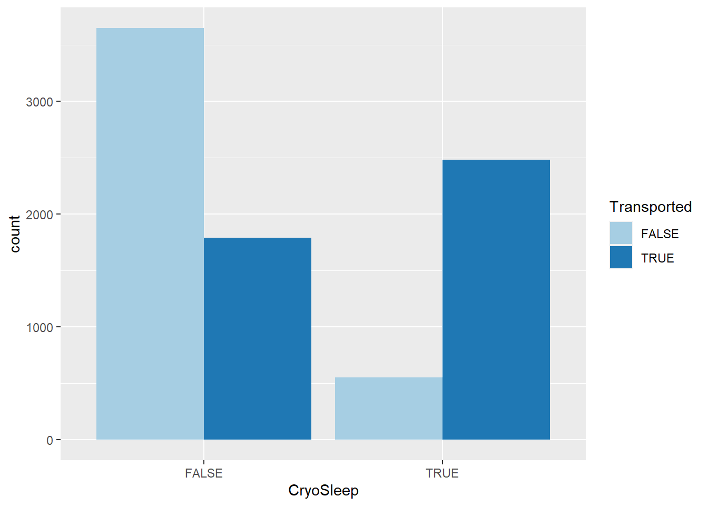
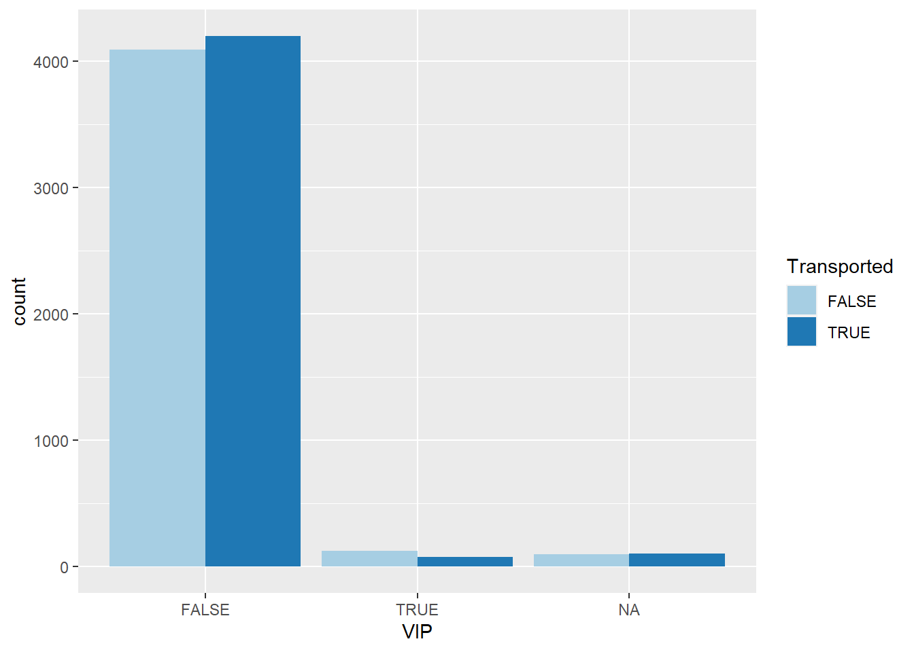
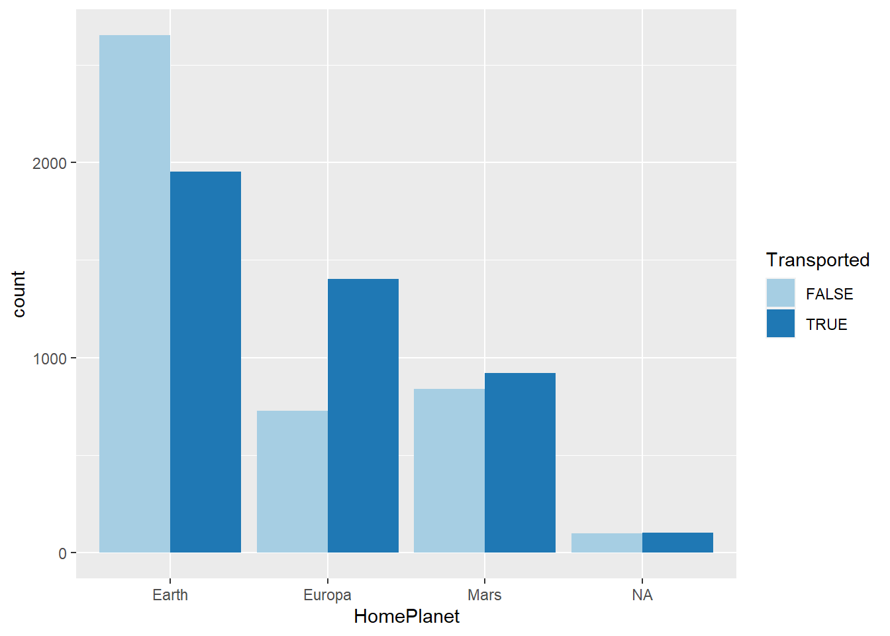
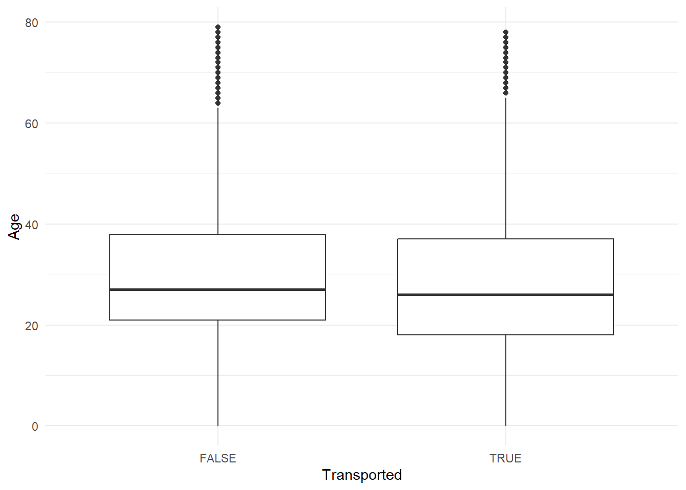
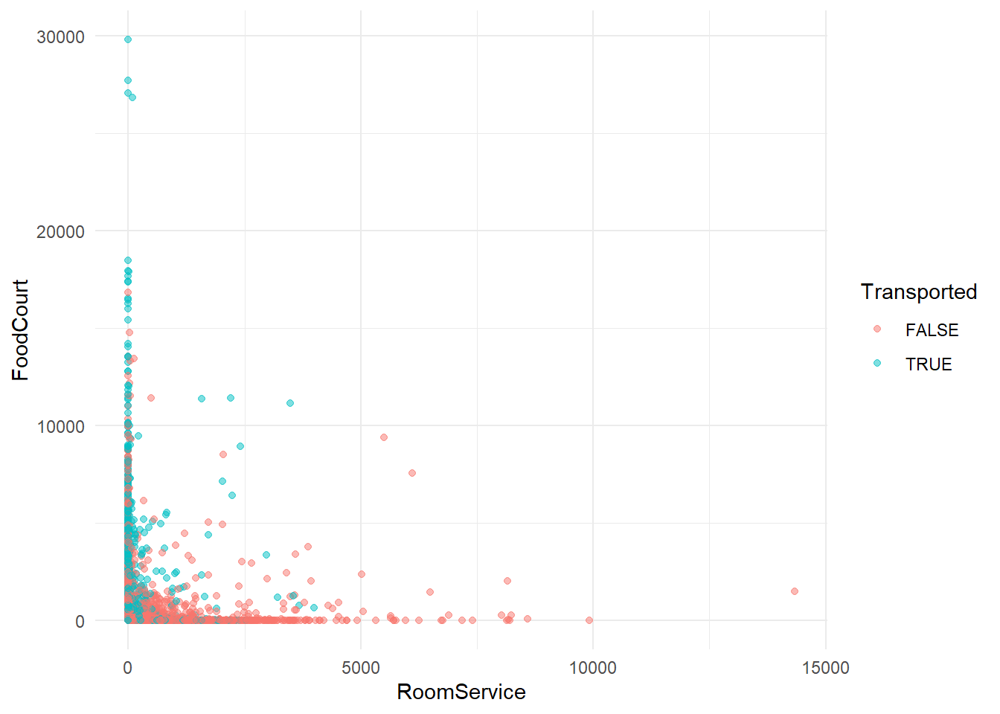
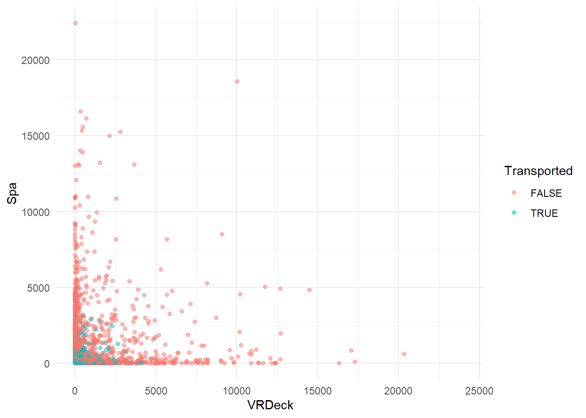
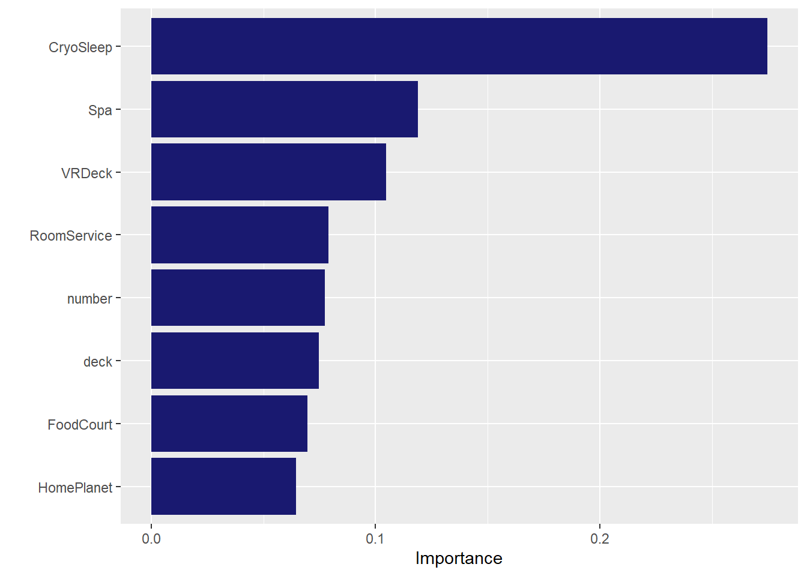

Code
library(tidyverse)
library(tidymodels)
library(bonsai)
library(vip)
library(lightgbm)Nusa Seldi
July 8, 2024
Impute the missing data for Spaceship Titanic and predict the passengers that transported to alternate dimension using Lightgbm
Spaceship Titanic is part of kaggle getting started competitions aims to introduce participants to basic machine learning concepts and facilitate networking within the Kaggle community. In this competition, our job is to predict which passengers are transported to an alternate dimension during the Spaceship Titanic’s collision with the spacetime anomaly. To assist in this prediction, we are provided with personal records retrieved from the ship’s damaged computer system.
We will build a classification model to predict which passengers are transported using Lightgbm. Lets get started!
# A tibble: 10 × 14
PassengerId HomePlanet CryoSleep Cabin Destination Age VIP RoomService
<chr> <chr> <lgl> <chr> <chr> <dbl> <lgl> <dbl>
1 0001_01 Europa FALSE B/0/P TRAPPIST-1e 39 FALSE 0
2 0002_01 Earth FALSE F/0/S TRAPPIST-1e 24 FALSE 109
3 0003_01 Europa FALSE A/0/S TRAPPIST-1e 58 TRUE 43
4 0003_02 Europa FALSE A/0/S TRAPPIST-1e 33 FALSE 0
5 0004_01 Earth FALSE F/1/S TRAPPIST-1e 16 FALSE 303
6 0005_01 Earth FALSE F/0/P PSO J318.5-22 44 FALSE 0
7 0006_01 Earth FALSE F/2/S TRAPPIST-1e 26 FALSE 42
8 0006_02 Earth TRUE G/0/S TRAPPIST-1e 28 FALSE 0
9 0007_01 Earth FALSE F/3/S TRAPPIST-1e 35 FALSE 0
10 0008_01 Europa TRUE B/1/P 55 Cancri e 14 FALSE 0
# ℹ 6 more variables: FoodCourt <dbl>, ShoppingMall <dbl>, Spa <dbl>,
# VRDeck <dbl>, Name <chr>, Transported <lgl>Rows: 8,693
Columns: 14
$ PassengerId <chr> "0001_01", "0002_01", "0003_01", "0003_02", "0004_01", "0…
$ HomePlanet <chr> "Europa", "Earth", "Europa", "Europa", "Earth", "Earth", …
$ CryoSleep <lgl> FALSE, FALSE, FALSE, FALSE, FALSE, FALSE, FALSE, TRUE, FA…
$ Cabin <chr> "B/0/P", "F/0/S", "A/0/S", "A/0/S", "F/1/S", "F/0/P", "F/…
$ Destination <chr> "TRAPPIST-1e", "TRAPPIST-1e", "TRAPPIST-1e", "TRAPPIST-1e…
$ Age <dbl> 39, 24, 58, 33, 16, 44, 26, 28, 35, 14, 34, 45, 32, 48, 2…
$ VIP <lgl> FALSE, FALSE, TRUE, FALSE, FALSE, FALSE, FALSE, FALSE, FA…
$ RoomService <dbl> 0, 109, 43, 0, 303, 0, 42, 0, 0, 0, 0, 39, 73, 719, 8, 32…
$ FoodCourt <dbl> 0, 9, 3576, 1283, 70, 483, 1539, 0, 785, 0, 0, 7295, 0, 1…
$ ShoppingMall <dbl> 0, 25, 0, 371, 151, 0, 3, 0, 17, 0, NA, 589, 1123, 65, 12…
$ Spa <dbl> 0, 549, 6715, 3329, 565, 291, 0, 0, 216, 0, 0, 110, 0, 0,…
$ VRDeck <dbl> 0, 44, 49, 193, 2, 0, 0, NA, 0, 0, 0, 124, 113, 24, 7, 0,…
$ Name <chr> "Maham Ofracculy", "Juanna Vines", "Altark Susent", "Sola…
$ Transported <lgl> FALSE, TRUE, FALSE, FALSE, TRUE, TRUE, TRUE, TRUE, TRUE, …# A tibble: 1 × 14
PassengerId HomePlanet CryoSleep Cabin Destination Age VIP RoomService
<int> <int> <int> <int> <int> <int> <int> <int>
1 0 201 217 199 182 179 203 181
# ℹ 6 more variables: FoodCourt <int>, ShoppingMall <int>, Spa <int>,
# VRDeck <int>, Name <int>, Transported <int># A tibble: 1 × 13
PassengerId HomePlanet CryoSleep Cabin Destination Age VIP RoomService
<int> <int> <int> <int> <int> <int> <int> <int>
1 0 87 93 100 92 91 93 82
# ℹ 5 more variables: FoodCourt <int>, ShoppingMall <int>, Spa <int>,
# VRDeck <int>, Name <int>spaceship_train <- spaceship_train |>
separate_wider_delim(cols = Cabin, delim = '/', names = c('deck', 'number', 'side'))
spaceship_test <- spaceship_test |>
separate_wider_delim(cols = Cabin, delim = '/', names = c('deck', 'number', 'side'))
spaceship_train <- spaceship_train |>
mutate(across(c(HomePlanet, CryoSleep, deck, side, Destination, VIP, Transported), as.factor)) |>
mutate(number = as.numeric(number)) |>
select(-Name, -PassengerId)
spaceship_test <- spaceship_test |>
mutate(across(c(HomePlanet, CryoSleep, deck, side, Destination, VIP), as.factor)) |>
mutate(number = as.numeric(number)) |>
select(-Name)
str(spaceship_train)tibble [8,693 × 14] (S3: tbl_df/tbl/data.frame)
$ HomePlanet : Factor w/ 3 levels "Earth","Europa",..: 2 1 2 2 1 1 1 1 1 2 ...
$ CryoSleep : Factor w/ 2 levels "FALSE","TRUE": 1 1 1 1 1 1 1 2 1 2 ...
$ deck : Factor w/ 8 levels "A","B","C","D",..: 2 6 1 1 6 6 6 7 6 2 ...
$ number : num [1:8693] 0 0 0 0 1 0 2 0 3 1 ...
$ side : Factor w/ 2 levels "P","S": 1 2 2 2 2 1 2 2 2 1 ...
$ Destination : Factor w/ 3 levels "55 Cancri e",..: 3 3 3 3 3 2 3 3 3 1 ...
$ Age : num [1:8693] 39 24 58 33 16 44 26 28 35 14 ...
$ VIP : Factor w/ 2 levels "FALSE","TRUE": 1 1 2 1 1 1 1 1 1 1 ...
$ RoomService : num [1:8693] 0 109 43 0 303 0 42 0 0 0 ...
$ FoodCourt : num [1:8693] 0 9 3576 1283 70 ...
$ ShoppingMall: num [1:8693] 0 25 0 371 151 0 3 0 17 0 ...
$ Spa : num [1:8693] 0 549 6715 3329 565 ...
$ VRDeck : num [1:8693] 0 44 49 193 2 0 0 NA 0 0 ...
$ Transported : Factor w/ 2 levels "FALSE","TRUE": 1 2 1 1 2 2 2 2 2 2 ...





set.seed(789)
spaceship_split <- initial_split(spaceship_train, prop = 0.8, strata = Transported)
train <- training(spaceship_split)
test <- testing(spaceship_split)
set.seed(777)
spaceship_fold <- vfold_cv(train, v = 10, strata = Transported)
spaceship_recipe <- recipe(Transported ~ ., data = train) |>
step_impute_knn(CryoSleep) |>
step_impute_median(all_numeric_predictors(), -VRDeck, -Spa) |>
step_impute_linear(VRDeck, Spa, impute_with = imp_vars(RoomService, FoodCourt, ShoppingMall)) |>
step_zv(all_predictors())
bt_spec <- boost_tree(trees = 200, mtry = tune(), min_n = tune(), tree_depth = tune()) |>
set_mode("classification") |>
set_engine("lightgbm")
spaceship_wf <- workflow() |>
add_recipe(spaceship_recipe) |>
add_model(bt_spec)
set.seed(1234)
doParallel::registerDoParallel()
bt_fit <- spaceship_wf |>
tune_grid(resamples = spaceship_fold,
grid = 5,
control = control_resamples(save_pred = TRUE))i Creating pre-processing data to finalize unknown parameter: mtry# A tibble: 10 × 9
mtry min_n tree_depth .metric .estimator mean n std_err .config
<int> <int> <int> <chr> <chr> <dbl> <int> <dbl> <chr>
1 6 7 12 accuracy binary 0.807 10 0.00578 Preprocessor1…
2 6 7 12 roc_auc binary 0.899 10 0.00445 Preprocessor1…
3 12 16 9 accuracy binary 0.805 10 0.00686 Preprocessor1…
4 12 16 9 roc_auc binary 0.896 10 0.00493 Preprocessor1…
5 3 31 3 accuracy binary 0.803 10 0.00455 Preprocessor1…
6 3 31 3 roc_auc binary 0.896 10 0.00390 Preprocessor1…
7 10 37 4 accuracy binary 0.811 10 0.00447 Preprocessor1…
8 10 37 4 roc_auc binary 0.901 10 0.00439 Preprocessor1…
9 5 21 12 accuracy binary 0.805 10 0.00700 Preprocessor1…
10 5 21 12 roc_auc binary 0.898 10 0.00445 Preprocessor1…# A tibble: 5 × 9
mtry min_n tree_depth .metric .estimator mean n std_err .config
<int> <int> <int> <chr> <chr> <dbl> <int> <dbl> <chr>
1 10 37 4 roc_auc binary 0.901 10 0.00439 Preprocessor1_M…
2 6 7 12 roc_auc binary 0.899 10 0.00445 Preprocessor1_M…
3 5 21 12 roc_auc binary 0.898 10 0.00445 Preprocessor1_M…
4 12 16 9 roc_auc binary 0.896 10 0.00493 Preprocessor1_M…
5 3 31 3 roc_auc binary 0.896 10 0.00390 Preprocessor1_M…# A tibble: 2 × 4
.metric .estimator .estimate .config
<chr> <chr> <dbl> <chr>
1 accuracy binary 0.816 Preprocessor1_Model1
2 roc_auc binary 0.905 Preprocessor1_Model1 Truth
Prediction FALSE TRUE
FALSE 707 164
TRUE 156 712# A tibble: 1 × 3
.metric .estimator .estimate
<chr> <chr> <dbl>
1 precision binary 0.812# A tibble: 1 × 3
.metric .estimator .estimate
<chr> <chr> <dbl>
1 f_meas binary 0.815
# A tibble: 4,277 × 1
Transported
<chr>
1 True
2 False
3 True
4 True
5 True
6 True
7 True
8 True
9 True
10 True
# ℹ 4,267 more rows# A tibble: 4,277 × 2
PassengerId Transported
<chr> <chr>
1 0013_01 True
2 0018_01 False
3 0019_01 True
4 0021_01 True
5 0023_01 True
6 0027_01 True
7 0029_01 True
8 0032_01 True
9 0032_02 True
10 0033_01 True
# ℹ 4,267 more rows---
title: "Spaceship Titanic"
author: "Nusa Seldi"
date: "2024-07-08"
categories: [code, tidymodels, titanic spaceship, lightgbm, impute, missing data]
code-fold: true
code-tools: true
table-of-contents: true
---
Impute the missing data for Spaceship Titanic and predict the passengers that transported to alternate dimension using Lightgbm
### Introduction
[Spaceship Titanic](https://www.kaggle.com/competitions/spaceship-titanic/overview) is part of kaggle getting started competitions aims to introduce participants to basic machine learning concepts and facilitate networking within the Kaggle community. In this competition, our job is to predict which passengers are transported to an alternate dimension during the Spaceship Titanic's collision with the spacetime anomaly. To assist in this prediction, we are provided with personal records retrieved from the ship's damaged computer system.
We will build a classification model to predict which passengers are transported using Lightgbm. Lets get started!
### Import Library
```{r}
#| label: load-packages
#| message: false
#| warning: false
library(tidyverse)
library(tidymodels)
library(bonsai)
library(vip)
library(lightgbm)
```
### Load dataset
```{r}
#| message: false
spaceship_train <- read_csv('train.csv')
spaceship_test <- read_csv('test.csv')
```
### Check the data
```{r}
#| echo: TRUE
spaceship_train |> head(10)
glimpse(spaceship_train)
```
### Check missing values
```{r}
spaceship_train |> summarise_all(~sum(is.na(.)))
spaceship_test |> summarise_all(~sum(is.na(.)))
```
### Data transformation
```{r}
spaceship_train <- spaceship_train |>
separate_wider_delim(cols = Cabin, delim = '/', names = c('deck', 'number', 'side'))
spaceship_test <- spaceship_test |>
separate_wider_delim(cols = Cabin, delim = '/', names = c('deck', 'number', 'side'))
spaceship_train <- spaceship_train |>
mutate(across(c(HomePlanet, CryoSleep, deck, side, Destination, VIP, Transported), as.factor)) |>
mutate(number = as.numeric(number)) |>
select(-Name, -PassengerId)
spaceship_test <- spaceship_test |>
mutate(across(c(HomePlanet, CryoSleep, deck, side, Destination, VIP), as.factor)) |>
mutate(number = as.numeric(number)) |>
select(-Name)
str(spaceship_train)
```
### Explore the data
```{r}
#| warning: false
spaceship_train |>
drop_na(CryoSleep) |>
ggplot(aes(x = CryoSleep, fill = Transported)) +
geom_bar(position = "dodge") +
scale_fill_brewer(palette = "Paired")
spaceship_train |>
ggplot(aes(x = VIP, fill = Transported)) +
geom_bar(position = "dodge") +
scale_fill_brewer(palette = "Paired")
spaceship_train |>
ggplot(aes(x = HomePlanet, fill = Transported)) +
geom_bar(position = "dodge") +
scale_fill_brewer(palette = "Paired")
spaceship_train |>
ggplot(aes(x = Transported, Age)) +
geom_boxplot() +
theme_minimal()
spaceship_train |>
ggplot(aes(x = RoomService, y = FoodCourt, color = Transported)) +
geom_point(alpha = 0.5) +
theme_minimal()
spaceship_train |>
ggplot(aes(x = VRDeck, y = Spa, color = Transported)) +
geom_point(alpha = 0.5) +
theme_minimal()
```
### Build a model
```{r}
set.seed(789)
spaceship_split <- initial_split(spaceship_train, prop = 0.8, strata = Transported)
train <- training(spaceship_split)
test <- testing(spaceship_split)
set.seed(777)
spaceship_fold <- vfold_cv(train, v = 10, strata = Transported)
spaceship_recipe <- recipe(Transported ~ ., data = train) |>
step_impute_knn(CryoSleep) |>
step_impute_median(all_numeric_predictors(), -VRDeck, -Spa) |>
step_impute_linear(VRDeck, Spa, impute_with = imp_vars(RoomService, FoodCourt, ShoppingMall)) |>
step_zv(all_predictors())
bt_spec <- boost_tree(trees = 200, mtry = tune(), min_n = tune(), tree_depth = tune()) |>
set_mode("classification") |>
set_engine("lightgbm")
spaceship_wf <- workflow() |>
add_recipe(spaceship_recipe) |>
add_model(bt_spec)
set.seed(1234)
doParallel::registerDoParallel()
bt_fit <- spaceship_wf |>
tune_grid(resamples = spaceship_fold,
grid = 5,
control = control_resamples(save_pred = TRUE))
```
### Evaluate the model
```{r}
#| warning: false
collect_metrics(bt_fit)
show_best(bt_fit, metric = "roc_auc")
best_tune <- select_best(bt_fit, metric = 'roc_auc')
final_wf <- finalize_workflow(spaceship_wf, best_tune)
spaceship_final <- final_wf |>
last_fit(spaceship_split)
collect_metrics(spaceship_final)
results <- collect_predictions(spaceship_final)
results |>
conf_mat(truth = Transported, estimate = .pred_class)
precision(results, truth = Transported, estimate = .pred_class)
f_meas(results, truth = Transported, estimate = .pred_class)
spaceship_final |>
extract_fit_parsnip() |>
vip(num_features = 8, aesthetics = list(fill = "midnightblue"))
final_wf <- extract_workflow(spaceship_final)
pred <- predict(final_wf, spaceship_test)
pred <- pred |>
mutate(Transported = case_match(.pred_class, "TRUE" ~ "True",
"FALSE" ~ "False")) |>
select(-.pred_class)
pred
```
### Export dataset for submission
```{r}
submission <- spaceship_test |>
select(PassengerId) |>
bind_cols(pred)
submission
write_csv(submission, file = 'submission-2.csv')
```